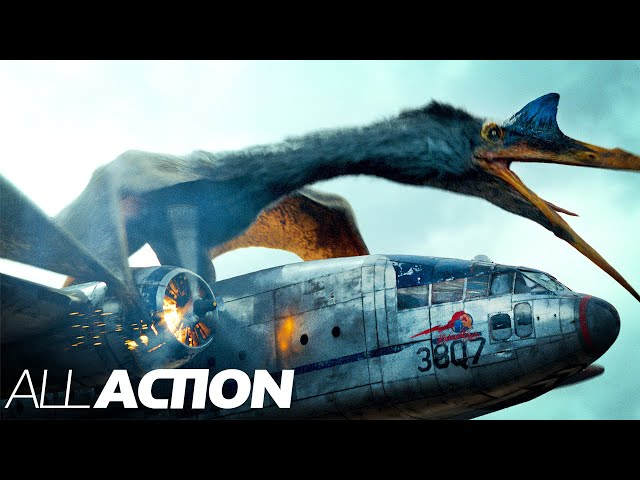
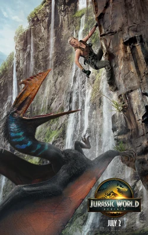

Le Quetzalcoatlus est l’un des dinosaures les plus dangereux de la saga Jurassic World. Reconnaissable à sa taille et sa grande envergure, il incarne le danger dans le ciel.

Le Quetzalcoatlus apparaît dans l' avant dernier et le dernier opus de la saga Jurassic World
